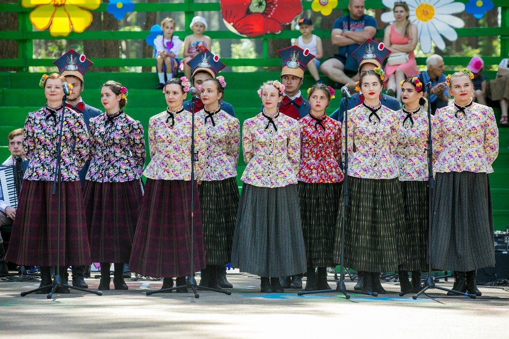
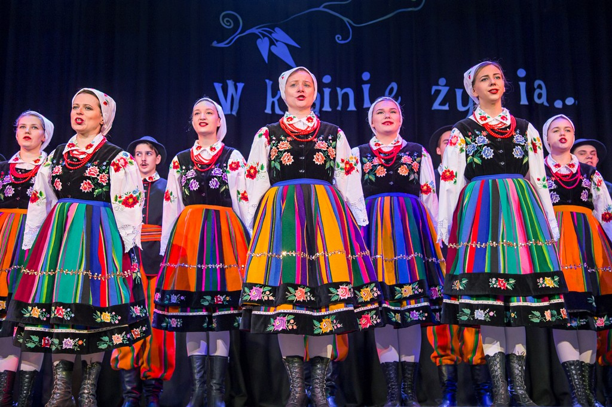
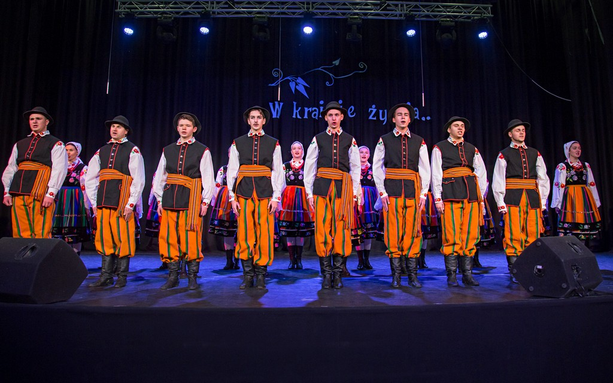

Wilenszczyzna
|  |  |  |
Song and Dance Ensemble “Wileńszczyzna” - Polish folk group based in Vilnius.
The band was founded in 1980. From the very beginning, its director was Gabriel Jan Mincewicz -
a former member of the parliament of the Vilnius Region.
On stage, the group presents not only individual Vilnius songs and dances
but combines them into separate compositions, recreating old Polish traditions and rituals.
This is how the well-known thematic programs Zaloty na Wileńszczyzna,
Vilnius Wedding, Kaziuki, Midsummer Night in the Vilnius Region,
Vilnius Fair and military-patriotic programs
with the Smoke of Fire and the Heart Rejoices were created.